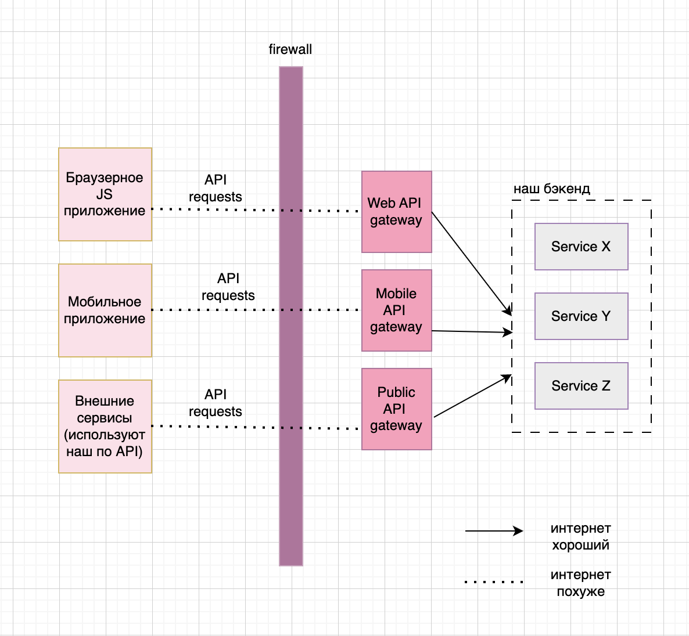

..
💐 BFF
BFF = Backend for frontend
Смысл: для каждого клиента - свой API gateway

API gateway для определенного клиента поддерживется командой разработки этого самого клиента.
-> Плюсы
- Разделение обязанностей (команды друг другу не мешают)
- Можно независимо секйлить разные части
- Один сломанный BFF (например, зависший или потребляющий слишком много ресурсов) не повлияет на работу других
- Удобнее мониторить
- Упрощается CI/CD, так как изменения в одном BFF не требуют пересборки всего остального